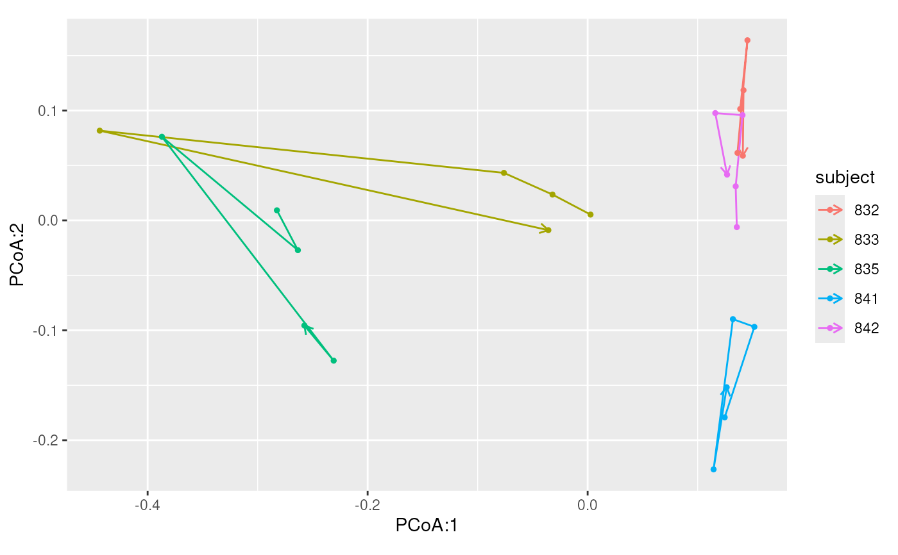
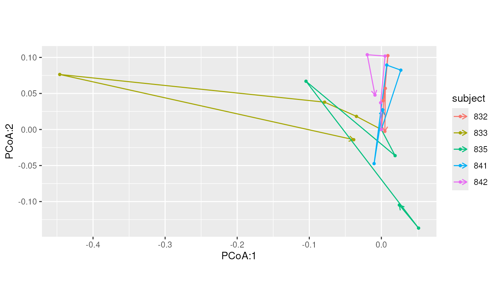
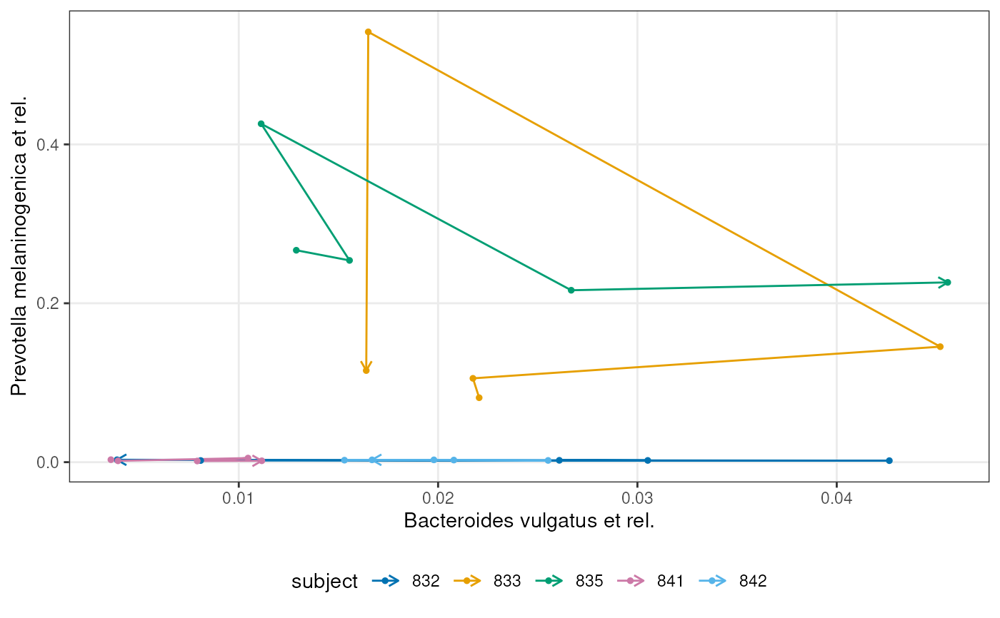
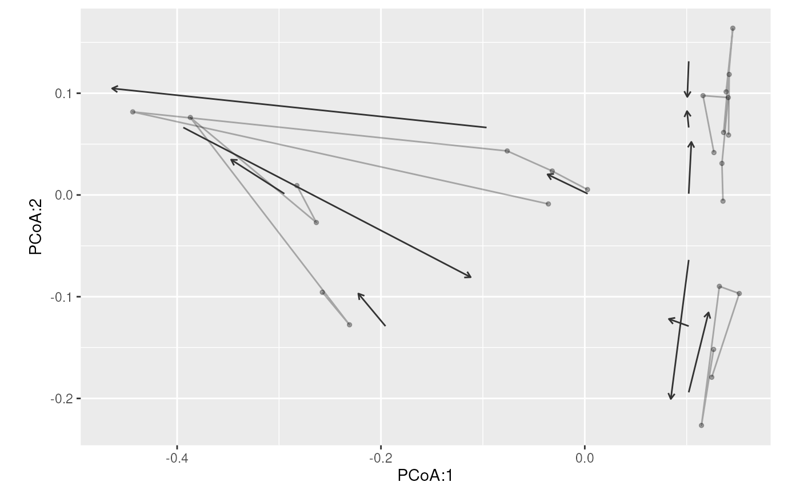
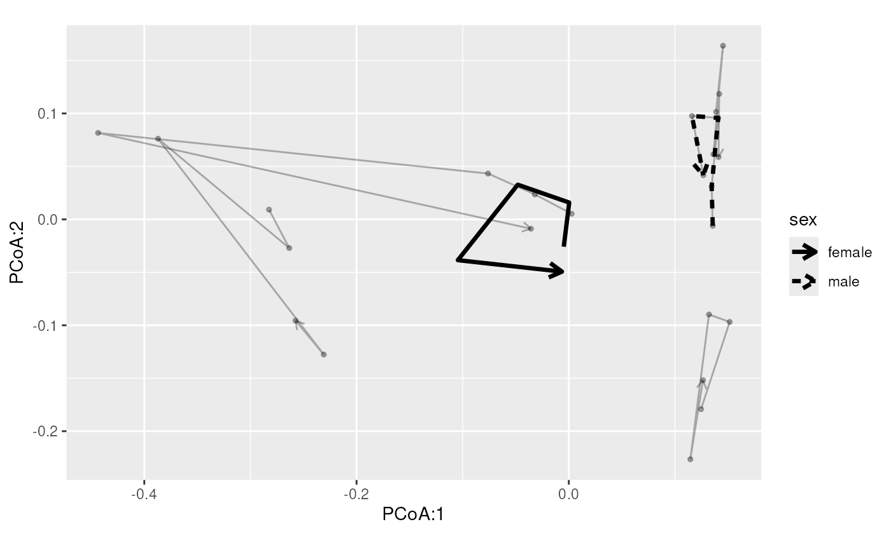
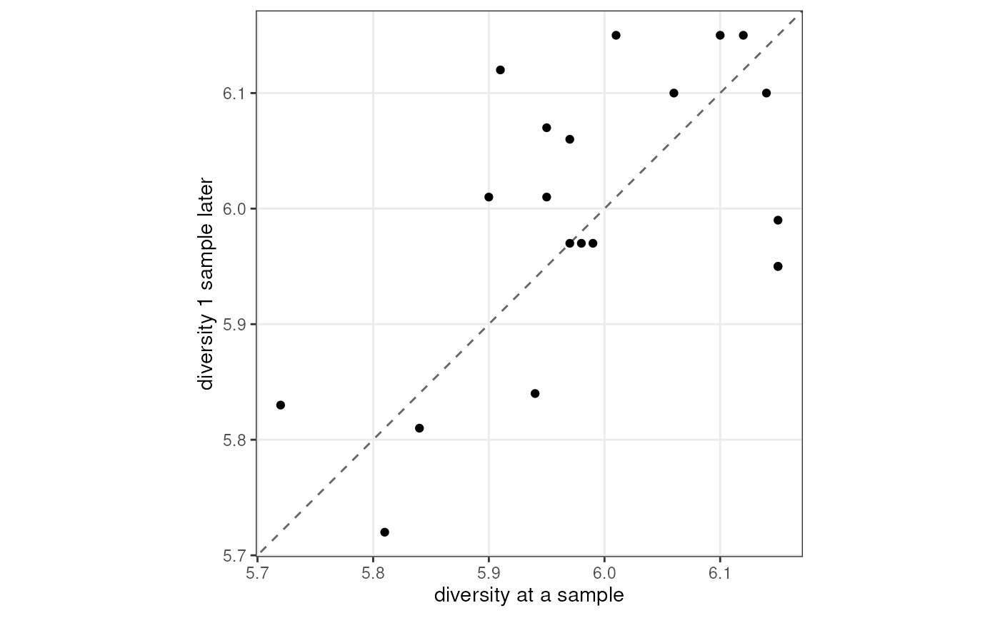

Plot trajectories of subjects in two dimensions
Source:R/AllGenerics.R, R/plotPath.R, R/zzz-mae.R
plotPath.RdplotPath() joins each subject's samples in time order in a
two-dimensional space: two components of an ordination, or two variables
such as features or colData columns.
Usage
plotPath(x, ...)
# S4 method for class 'SummarizedExperiment'
plotPath(
x,
time.col,
group = NULL,
dimred = NULL,
ncomponents = 2,
x.var = NULL,
y.var = NULL,
assay.type = "counts",
origin = c("none", "baseline"),
arrows = TRUE,
colour.by = NULL,
group.by = NULL,
centroids = FALSE,
field = NULL,
lag = NULL,
animate = FALSE,
max.gap = NULL,
...
)
# S4 method for class 'MultiAssayExperiment'
plotPath(x, ..., experiment = 1L)Arguments
- x
a
SummarizedExperimentobject.- ...
additional arguments passed to
geom_path.- time.col
Character scalar. Specifies the column fromcolData(x)that contains sampling times: numeric,Date,POSIXctor a factor of visits. Time differences, as inmax.gap, are in days forDateand hours forPOSIXcttimes.- group
Character scalar. Specifies the column fromcolData(x)that identifies subjects. IfNULL, all samples form one path. (Default:NULL)- dimred
Character scalar. Specifies thereducedDim(x)to plot. (Default:NULL)- ncomponents
Numeric scalarorvector. The two components ofdimredto plot:2for the first two, or two components by index or name. (Default:2)- x.var, y.var
Character scalar. Variables to plot instead ofdimred: a column ofcolData(x)or a feature ofassay.type. (Default:NULL)- assay.type
Character scalar. Specifies the assay that holds features named inx.varory.var. (Default:"counts")- origin
Character scalar. Whether paths start where the first sample lies ("none") or at zero, by subtracting each subject's first sample ("baseline"). (Default:"none")- arrows
Logical scalar. Whether paths end in an arrow pointing forward in time. (Default:TRUE)- colour.by
Character scalar. Specifies the column fromcolData(x)that colours the paths. (Default:NULL)- group.by
Character scalar. Specifies the column fromcolData(x)that groups subjects forcentroids. (Default:NULL)- centroids
Logical scalar. Draws the mean path of eachgroup.bygroup, or of all subjects: the mean position at each time. Best with times shared by the subjects, such as visits. (Default:FALSE)- field
Integer scalar. Draws the mean movement to the next sample from each cell of afieldbyfieldgrid as an arrow. IfNULL, draws no field. (Default:NULL)- lag
Integer scalar. Instead of paths, draws the value ofx.var, or the first component ofdimred, against its valuelagsamples later in the same path, with the identity line. (Default:NULL)- animate
Logical scalar. Reveals the paths over time withgganimate::transition_reveal(); requires gganimate. (Default:FALSE)- max.gap
Numeric scalar. Breaks a path where consecutive samples of a subject are further apart than this, intime.colunits. For visits,NULLbreaks paths at visits without a sample; otherwiseNULLnever breaks paths. The movement field and lag plots pair samples within paths only. (Default:NULL)- experiment
Character scalarorinteger scalar. For aMultiAssayExperiment, the experiment to plot; its samples get thecolDataofx. (Default:1L)
Details
Give either dimred or both x.var and y.var; with
lag, x.var alone is enough. Points near the identity line
of a lag plot change little over lag samples. Ordinations and lag
plots have equal axis scales.
Examples
data("hitchip1006", package = "miaTime")
tse <- hitchip1006
# Some profiles are stored twice; keep the first copy
tse <- tse[, !duplicated(t(SummarizedExperiment::assay(tse, "counts")))]
# Subjects sampled five times
tse <- tse[, tse$subject %in% names(which(table(tse$subject) == 5))]
# Paths of subjects in a PCoA of Bray-Curtis dissimilarities
tse <- mia::transformAssay(tse, method = "relabundance")
tse <- mia::addMDS(tse, assay.type = "relabundance", method = "bray",
name = "PCoA")
plotPath(tse, time.col = "time", group = "subject", dimred = "PCoA",
colour.by = "subject")

# The same paths, all starting at zero, to compare their directions
plotPath(tse, time.col = "time", group = "subject", dimred = "PCoA",
origin = "baseline", colour.by = "subject")

# Two genera against each other
plotPath(tse, time.col = "time", group = "subject",
x.var = "Bacteroides vulgatus et rel.",
y.var = "Prevotella melaninogenica et rel.",
assay.type = "relabundance", colour.by = "subject")

# Mean movement over a 6 x 6 grid of the PCoA
plotPath(tse, time.col = "time", group = "subject", dimred = "PCoA",
field = 6, arrows = FALSE)

# Mean path per visit and sex
tse$visit <- factor(ave(tse$time, tse$subject, FUN = rank))
plotPath(tse, time.col = "visit", group = "subject", dimred = "PCoA",
group.by = "sex", centroids = TRUE)

# Diversity against diversity at the next sample
plotPath(tse, time.col = "time", group = "subject", x.var = "diversity",
lag = 1)
